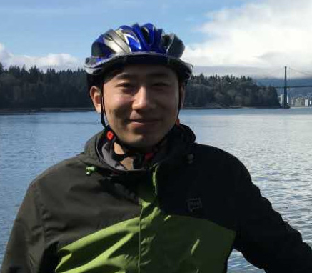
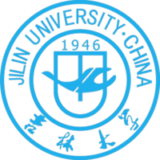
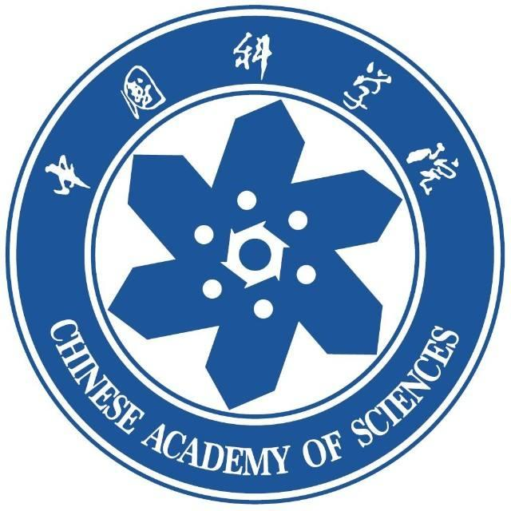
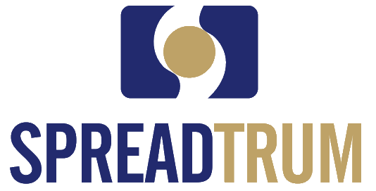
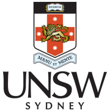

Dr. Dalin Zhang
Assistant Professor Department of Computer Science, Aalborg University, DenmarkChair Computer Society, IEEE Denmark Section
Member IEEE, ACM
Office 3.2.06
Selma Lagerlöfs Vej 300
DK-9220, Aalborg Øst, Denmark
Phone: (+45) 9174-5516
Email: zhangdalin90@gmail.com
Short Bio
I am currently an Assistant Professor (Tenure Track) in the Department of Computer Science, Aalborg University, Denmark. I am also a faculty member in Center for a faculty member in Center for Data-Intensive Systems (Daisy) with Prof. Christian S. Jensen and Prof. Bin Yang.
Before joining Aalborg University at Aug 2020, I was pursuing my PhD degree at the School of Computer Science and Engineering, the University of New South Wales Sydney, Australia from Apr 2017 to Apr 2020. My supervisors are Dr. Lina Yao and Dr. Sen Wang. I was an Australian Government Research Training Program (RTP) scholarship holder between 2017-2020 (awarded in 2016).
During Jan 2017 to Apr 2017, I was working as a Research Assistant at The University of British Columbia, Canada. From Jul 2015 to Dec 2016, I was at Spreadtrum Communications, Inc, China, working as a Digital Integerated Circuit Design Engineer. I received my Master degree from University of Chinese Academy of Sciences in 2015, and my Bachelor Degree from Jilin University in 2012, both major in Microelectronics.
My current research interest lies in Data And Learning-based Intelligence with Novel application.
Recent News
- [Jan 2021] Our survey paper on sensor-based HAR is accepted by ACM Computing Surveys (CUSR)!
- [Dec 2020] I was promoted to be a Senior PC member of IJCAI 2021!
- [Dec 2020] I start to serve as the Chair of Computer Society, IEEE Denmark Section!
- [Nov 2020] I was invited to serve as Program Chair for the 2021 6th International Conference on Computing, Control and Industrial Engineering!
- [Oct 2020] I was elected as a member of the Department Council of Department of Computer Science, Aalborg University!
- [Oct 2020] I was invited to be a PC member of IJCAI 2021!
- [Oct 2020] My first co-supervised PhD student Xinle Wu started his career in AAU!
- [Aug 2020] I started new career at the Department of Computer Science, Aalborg University, as an Assistant Professor (Tenure Track)!
See More
- [Apr 2020] I was invited to be a PC member of PMMS 2020!
- [Apr 2020] I graduated and was awarded the degree of Doctor of Philosophy form UNSW!
- [Jan 2020] One paper is accepted by IEEE Journal of Biomedical and Health Informatics (JBHI)!.
- [Nov 2019] I am invited to be a Program Committee (PC) member for ELCS 2020.
- [Nov 2019] I am awarded ICDM'19 Student Travel Award!
- [Sep 2019] One paper is accepted by IEEE Transactions on Neural System and Rehabiliatation Engineering (TNSRE)!
- [Aug 2019] Two papers are accepted by ICDM'19!
- [Jul 2019] I am invited to be a Program Committee (PC) member for ICONIP 2019.
- [Jun 2019] I am invited to be a Program Committee (PC) member for ICDSBA 2019.
- [May 2019] One paper is accepted by IJCAI'19.
- [Mar 2019] One paper is accepted by IEEE Signal Processing Letters (SPL, IF=3.268).
Organizations



